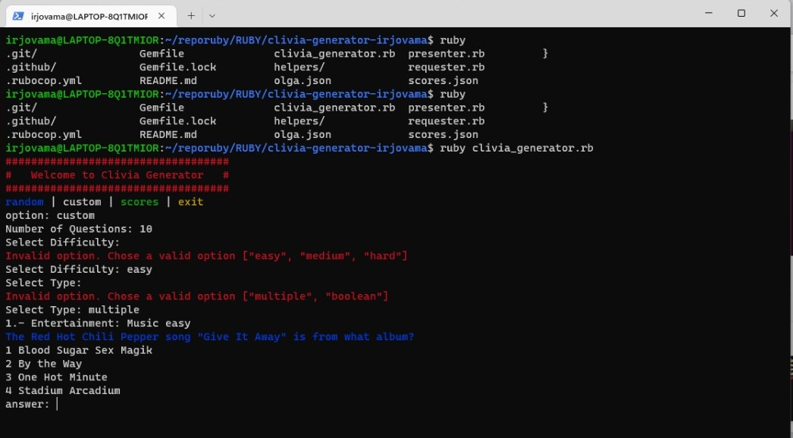

What is my opinion of Ruby?
I think it is a very complete and interesting language as well as simple but effective. Sometimes I was surprised at how easy it was to find a solution to a problem because Ruby practically takes care of doing everything below without the need to create custom methods.

Last Proyect on Ruby